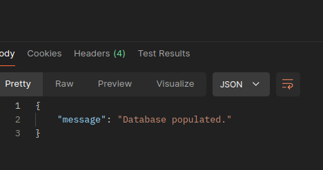
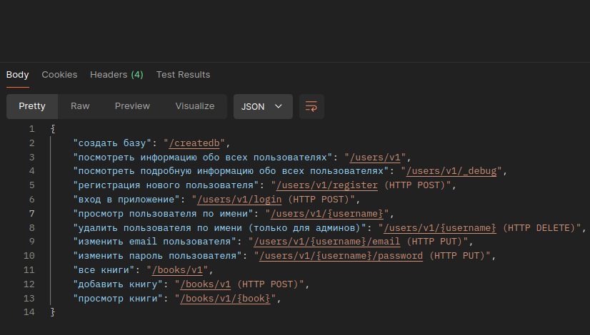
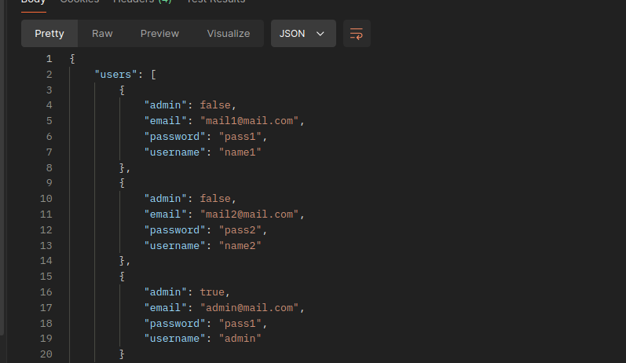
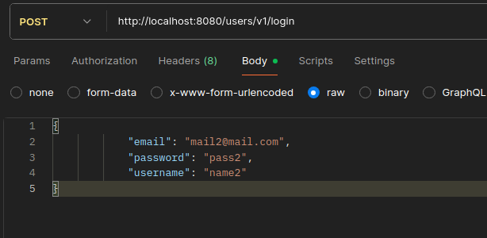
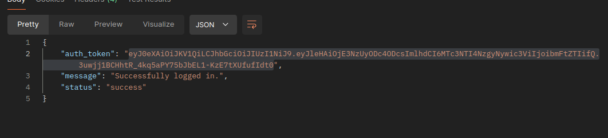
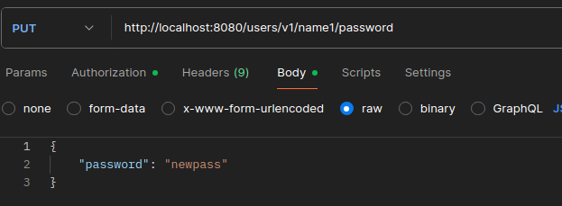
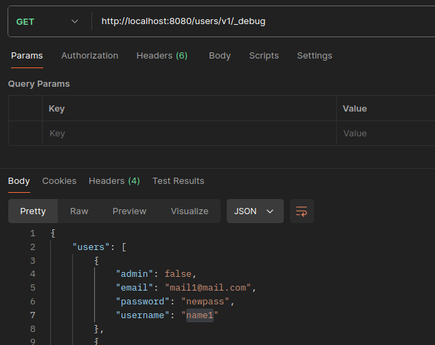

Категория OWASP: API1:2023 — Broken Object Level Authorization (BOLA).
Описание: Уязвимость ненадлежащей авторизации [CWE-285] в Fortinet FortiOS (версии с 7.4.0 по 7.4.1, с 7.2.0 по 7.2.8, с 7.0.0 по 7.0.11) и FortiProxy (версии с 7.4.0 по 7.4.8, все версии 7.2, 7.0 и 2.0) позволяет аутентифицированному злоумышленнику получить доступ к статическим файлам других виртуальных доменов (VDOM) с помощью специально сформированных HTTP или HTTPS запросов.
Причина: Проверка на наличие токена, но не проверка на наличие прав в токене
Категория OWASP: API4:2023 — Unrestricted Resource Consumption. Сcылка на источник
Описание: В REST API платформы электронной коммерции (Magento/Adobe Commerce) был найден эндпоинт для генерации PDF-счетов, который не ограничивал количество одновременно запрашиваемых записей или размер выходного файла.
Причина: Отсутствие лимитов (Rate Limiting и Payload Size Limiting).
Категория OWASP: API7:2023 Server Side Request Forgery Сcылка на источник
Описание: Существует уязвимость CWE-918: подделка серверных запросов (SSRF), которая может привести к неавторизованному удаленному выполнению кода (RCE), если доступ к серверу осуществляется через сеть при условии знания скрытых URL-адресов и манипулирования заголовком запроса Host.
Причина: доверие сервера к данным из HTTP-заголовков и отсутствии строгой проверки путей назначения для запросов.
Для выполнения запросов воспользуюсь программой Postman
Заполняем базу по адресу http://localhost:8080/createdb

По адресу http://localhost:8080/ получаем все эндпоинты

По адресу http://localhost:8080/users/v1/_debug можем получить всех юзеров

Помимо юзернейма мы получаем пароль в открытом виде и информацию о правах пользователя. Значит это уязвимость типа API3:2023 Broken Object Property Level Authorization. Мы получаем чувствительные поля, которые не должный быть доступны обычному юзеру.
Меры предотвращения:
Логинимся как юзер name2
http://localhost:8080/users/v1/login

Получаем токен

Пробуем поменять пароль у другого юзера - name1

Что успешно получается

Эта уязвимость называется API1:2023 — Broken Object Level Authorization (BOLA). Мы можем менять чужой ресурс Меры предотвращения: